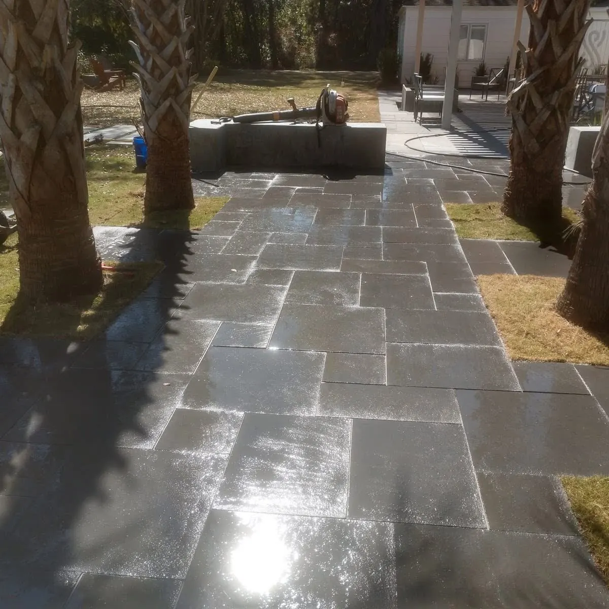

Choosing Hardscape Materials in Charleston

Two Decisions, Not One
Choosing a hardscape material is really two decisions: what it should look like against your house, and what goes underneath it. The second one decides whether you are happy with it in ten years.

The Base Is the Whole Job
Everything that goes wrong with hardscaping comes down to two things: settling and roots. Both are decided before a paver is laid.
Our best method is to mortar-set pavers on a solid concrete base. Alternatives are a compacted ROC base with mortar on top, or sand and granite fines. #57 stone can replace ROC and brings a real advantage — the air gaps in it help stop tree roots growing up into the patio. Geotextile fabric goes underneath where the site calls for it.
The Summerville marble patio here is mortar set over a concrete slab. That is what let us get a perfect install with crisp edges, with a brick border and tile imported from Italy.
The Materials, Honestly Compared
| Natural stone | travertine, bluestone, marble. Best looking, longest lasting, most expensive |
|---|---|
| Concrete pavers | a wide range, cheap through pricey, huge choice of shapes and colors |
| Poured concrete | $12 per sq ft, the most affordable. Salt-void and tabby finishes look excellent |
| Brick | the Charleston default for borders, steps and walks, and it dates well |
Patios and pavers start around $18 per sq ft installed.
Travertine is porous and hard to keep clean without a sealer, which is worth knowing before choosing it for a spot that sees red wine and pollen. We seal pavers occasionally, and we follow the manufacturer’s specification for the process rather than a rule of thumb.
Two Things Charleston Adds to the Decision
- Permeable pavers are becoming a necessity. Lowcountry towns are getting stricter about how much impermeable surface a property can have, so a large patio or driveway needs that planned in rather than discovered at permitting.
- Drainage is part of the hardscape, not an afterthought. Proper grading, and drain basins with piping where the water needs carrying off. Where a pool deck meets the house, a channel drain along that junction is often necessary.
For gravel walks and around stepping stones we commonly use rock glue, which keeps the stone where it was laid.

Match the House, Not the Showroom
The material that suits a Charleston single house is rarely the one that photographs best in a catalog. Brick borders, bluestone walks and stucco walls with brick caps read as though they have always been there, because locally they have.
On this front yard the walls and steps take up the grade, and the bluestone walk with a brick border ties the steps to the drive. Nothing about it announces itself, which is the point.
Frequently Asked Questions
What is the best base for a paver patio in Charleston?
Mortar-setting the pavers on a solid concrete base is our best method. Alternatives are a compacted ROC base with mortar on top, or sand and granite fines. #57 stone can replace ROC and helps prevent tree roots because of the air gaps in it.
Why do patios settle or crack?
Settling and roots, and both come back to base preparation and compaction. Doing it right the first time and using a root barrier where needed is the fix.
Which hardscape material lasts longest?
Natural stone — travertine, bluestone and marble. It looks the best and lasts the longest, and it costs the most. Poured concrete is the most affordable, and salt-void or tabby finishes look great.
Do pavers need sealing?
Occasionally, and we follow the manufacturer specification for the process and maintenance. Travertine is porous and hard to keep clean without a sealer.
Do I need permeable pavers?
Increasingly, yes. Lowcountry towns are tightening limits on impermeable surface, so it is worth planning for on any large patio or driveway.
Planning a Project of Your Own?
See everything we design and build, or get in touch to talk through your ideas with Doug and Zach.